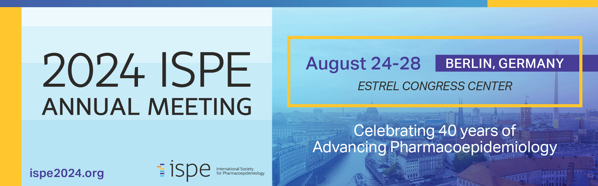

renv::restore()Let’s git it started
Transparency and reproducibility across the RWE study lifecycle

Course Date: August 25, 2024 (9am-12:30pm, Berlin)
About
Transparency and reproducibility are major prerequisites for conducting meaningful real-world evidence (RWE) studies that are fit for decision-making. With HARPER and RECORD-PE, many advances have been made in the documentation and reporting of study protocols, study parameters, and results, but the principles for computational reproducibility of study results, version control and sharing of analytic code in RWE are not yet as established as in other quantitative disciplines like computational biology and health informatics, where there are potentially fewer barriers.
As many stakeholders (funding agencies, journals, regulators, data providers) increasingly require a transparent audit trail of all steps of a RWE study and reproducible analytic source code, this warrants pharmacoepidemiologists to upskill and implement reproducible workflows as routine practice. This course aims to give an introduction on practical study design templates (HARPER) and tools (git, quarto) to increase the transparency and reproducibility across the design, analysis and reporting stages of a RWE study.
Tip
- Course material: Course materials can be found at https://github.com/janickweberpals/icpe-git-2024
- Poll everywhere survey can be found at https://pollev.com/janickweberpals917
Intro
Outro
Course requisites
This course is designed for participants both new and experienced in pharmacoepidemiology. Whilst this may be most relevant for people who work hands-on with healthcare databases and so have some coding experience, any levels of expertise are welcome.
Important
Course participants should have a good understanding of basic pharmacoepidemiologic principles and ideally some experience with any statistical programming language.
Helpful pre-reads
Weberpals J and Wang SV. The FAIRification of research in real-world evidence: A practical introduction to reproducible analytic workflows using Git and R. Pharmacoepidemiol Drug Saf. 2024 Jan;33(1):e5740. doi: 10.1002/pds.5740.
Schultze A, Tazare J. The role of programming code sharing in improving the transparency of medical research. BMJ. 2023 Oct 17;383:2402. doi: 10.1136/bmj.p2402. PMID: 37848206.
Wang SV, Pottegård A, Crown W, Arlett P, et al. HARmonized Protocol Template to Enhance Reproducibility of hypothesis evaluating real-world evidence studies on treatment effects: A good practices report of a joint ISPE/ISPOR task force. Pharmacoepidemiol Drug Saf. 2023 Jan;32(1):44-55. doi: 10.1002/pds.5507. Epub 2022 Oct 10. PMID: 36215113; PMCID: PMC9771861.
Dependencies
This is a quarto project and R package dependencies are managed through the renv package. All packages and their versions can be viewed in the lockfile renv.lock. All required packages and the appropriate versions can be installed by running the following command:
Reproducibility
Follow these steps if you wish to reproduce this website:
Note
- Install all necessary dependencies (see above) and make sure Quarto is installed (usually comes automatically with RStudio installation)
- Using command line, run all scripts via
quarto renderor in RStudioBuild > Render Book
Repository structure and files
Directory overview
Overview of files and file types in this repository:
- .Rprofile - defines paths, activates
renv, options for Posit R package manager - renv/renv.lock -
renvdirectories to manage R dependencies and versions used in this simulation - .github - workflow files for automatic CI/CD on Github pages
- README - essential information about the project (README.Rmd renders to README.md via update_README.R after each
quarto rendercommand)